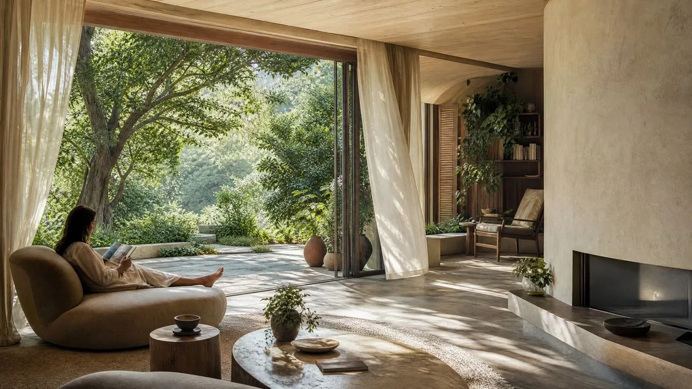
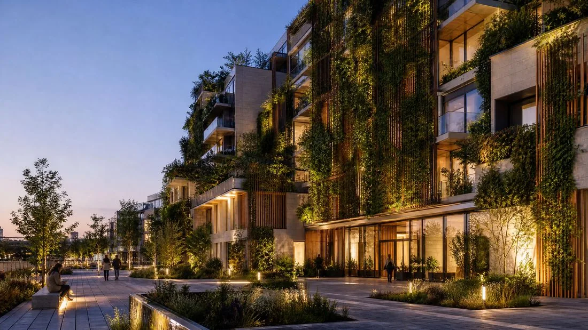

บทความ
สถาปัตยกรรมเพื่อสุขภาพและดีไซน์เชิงชีวภาพ

สถาปัตยกรรมกำลังเปลี่ยนแปลงครั้งใหญ่ — คุณค่าของอาคารไม่ได้วัดจากความสามารถด้านเทคนิคหรือสุนทรียภาพเท่านั้น แต่วัดจากความสามารถในการฟื้นฟูสุขภาพกายและใจของผู้ใช้อาคาร กระแสนี้ขับเคลื่อนโดยองค์กรระดับนานาชาติ เช่น Global Wellness Institute ทำให้สุขภาพและดีไซน์เชิงชีวภาพกลายเป็นหัวใจสำคัญของบริษัทสถาปนิก
ดีไซน์เชิงชีวภาพ : ความจำเป็นทางชีวชีวะ ไม่ใช่เพียงเทรนด์
ดีไซน์เชิงชีวภาพเริ่มจากหลักการง่ายๆ : มนุษย์มีความผูกพันกับธรรมชาติโดยกำเนิด ซึ่งจำเป็นต่อสมดุลทางจิตใจ ไม่ใช่เพียงเพิ่มต้นไม้ในบ้านสักสองต้น แต่อาศัยหลักการที่เป็นที่ยอมรับ ซึ่งพัฒนาโดยบริษัทอเมริกัน Terrapin Bright Green จัดระเบียบการมีอยู่ของพืช รูปทรง และวัสดุธรรมชาติออกเป็นสามกลุ่มใหญ่ : ธรรมชาติที่ปรากฏโดยตรงในพื้นที่ รูปทรงที่สื่อถึงธรรมชาติโดยไม่จำลองแบบตรง และวิธีที่พื้นที่นั้นถูกรับรู้ หากนำไปใช้อย่างถูกต้อง หลักการเหล่านี้ช่วยลดความเครียด ช่วยลดความดันโลหิต และเพิ่มสมาธิการจดจ่อ

การใช้งานจริง ตั้งแต่กำแพงต้นไม้จนถึงมุมพักผ่อนคลาย
ในหน้างานจริง หลักการเหล่านี้นำไปสู่การเลือกที่เป็นรูปธรรมชัดเจน : กำแพงต้นไม้และทัศนียภาพเปิดโล่งสู่สวนหรือแหล่งน้ำเพื่อการเชื่อมต่อกับธรรมชาติโดยตรงทางสายตาฯ รูปทรงโค้งงอ ลวดลายอินทรีย์ และไม้ดิบแทนมุมฉากหนา เพื่อกระตุ้นการรับรู้โดยไม่ต้องลอกเลียนภูมิทัศน์โดยตรง มุมพักผ่อนและมุมอ่านหนังสือที่กำบัง หรือการระบายอากาศตามธรรมชาติและเงาแสงที่เปลี่ยนไปตลอดวัน
สู่สถาปัตยกรรมที่เงียบสงบและฟื้นฟู
แนวโน้มหลักสำหรับปีต่อๆ ไปคือการผสมสุขภาพเชิงชีวภาพนี้เข้ากับสุนทรียซ์เรียบง่ายใกล้เคียง "quiet luxury" : โทนสีดิน วัสดุคาร์บอนต่ำ เทคโนโลยีที่ซ่อนตัว กระจกที่สำคัญอีกอย่างหนึ่งคือเปลือกอาคารอาคาร ซึ่งไม่ใช่เพียงกำแพงอีกต่อไป แต่กลายเป็นระบบนิเวศแนวตั้งที่ผสมไม้ หิน และพืชหนาแน่น ช่วยกรองอากาศและดูดซับเสียง

บทสรุป
สถาปัตยกรรมเพื่อสุขภาพไม่ได้สงวนเฉพาะวิลล่าหรูสี่อีกต่อไป : กำลังกลายเป็นมาตรฐานของการพัฒนาเมืองอย่างยั่งยืน การวางชีววิทยามนุษย์เป็นศูนย์กลางการออกแบบหมายถึงการสร้างไม่ใช่เพียงที่กำบัง แต่เป็นพื้นที่ที่ออกแบบมาเพื่อหล่อเลี้ยงทั้งร่างกายและจิตใจ